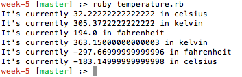

Ruby Class is in session
6/21/15
If you haven't previously heard of classes, they are one of the foundamental building blocks of the ruby language. Classes are dificult to understand initially, but once grasp the basics they are pretty intuitive. For this reason, I'm going to use an example to help solidify these concepts. Let's start by defining a Class. A class is an over-arching element that contains methods, class variables, instance variables, and much more. Classes allow you to organize your code in a way that everything inside the Class shares the same basic structure and charateristics. Variables inside this class can be defined a number of ways that will change where they exist and how they can, or can not be, accessed and altered.
Below I created a basic class called Temperature, which takes in two variables (current_temp & measurement) and initializes these variables as instance variables. I'll walk you threw what instance variables are and what this class is doing below, but try to get familar with the syntax of a class.
class Temperature
def initialize(current_temp, measurement)
@temp = current_temp
@measurement = measurement
end
def some_method
#method that does something really cool
end
end
temp_fahren = Temperature.new(90, "fahrenheit")
The code above creates two instance variables @temp & @measurement. These variables can be accessed anywhere inside this class and are unique to the temp_fahren object. You can have as many @temp variables as you do objects. These variables can be accessed or altered anywhere in the code. What makes these variables instance variables is the @ symbol before them. If we wanted to create a class variable that would standard throughout all object and can't be altered then would would use the double @@ symbol (@@temp). This makes the variable static between objects.
Now that you understand these basic structure of Classes, I'm going to show you a more elaborate class with multiple methods inside of it. Try to decifer what the code is diong and what will be outputted to the screen (HINT, there will be 6 lines printed to the terminal)
class Temperature
def initialize(current_temp, measurement)
@temp = current_temp.to_f
@measurement = measurement
end
def convert_to_celsius
if @measurement == "fahrenheit"
#convert fahrenheit to celsius
@temp = (@temp - 32) * (5.0 / 9)
@measurement = "celsius"
puts "It's currently #{@temp} in #{@measurement}"
return @temp
elsif @measurement == "kelvin"
#convert from kelvin to celsius
@temp = @temp - 273.15
@measurement = "celsius"
puts "It's currently #{@temp} in #{@measurement}"
return @temp
end
end
def convert_to_kelvin
if @measurement == "fahrenheit"
@temp = (@temp + 459.67) * (5.0 / 9)
@measurement = "kelvin"
puts "It's currently #{@temp} in #{@measurement}"
return @temp
elsif @measurement == "celsius"
@temp = @temp + 273.15
@measurement = "kelvin"
puts "It's currently #{@temp} in #{@measurement}"
return @temp
end
end
def convert_to_fahrenheit
if @measurement == "kelvin"
@temp = (@temp - 273.15) * (9.0 / 5) + 32.0
@measurement = "fahrenheit"
puts "It's currently #{@temp} in #{@measurement}"
return @temp
elsif @measurement == "celsius"
@temp = (@temp * (9.0 / 5)) + 32.0
@measurement = "fahrenheit"
puts "It's currently #{@temp} in #{@measurement}"
return @temp
end
end
end
temp_fahren = Temperature.new(90, "fahrenheit")
temp_fahren.convert_to_celsius
temp_fahren.convert_to_kelvin
temp_celsius = Temperature.new(90, "celsius")
temp_celsius.convert_to_fahrenheit
temp_celsius.convert_to_kelvin
temp_kelvin = Temperature.new(90, "kelvin")
temp_kelvin.convert_to_fahrenheit
temp_kelvin.convert_to_celsius
This class Temperature now takes in two variables, initializes them as instance variables, and creates three methods (convert_to_kelvin, convert_to_celsius, & convert_to_fahrenheit), and makes three objects that all have their own instance variables. These methods convert between the most common measurements of heat.
To utilize the power of classes we have to create object to use the methods within classes. At the end of the code I created three object (temp_fehren, temp_celsius, & temp_kelvin). This is how you create an object called temp_fahren
temp_fahren = Temperature.new(90, "fahrenheit")
Once this object is created, we can use any of the methods on this object from the class Temperature. For example, if we wanted to convert from 90 degrees fahrenheit to celsius, we would
temp_fahren.convert_to_celsius #=> It's currently 305.372222 in kelvin
As promised, here are the results from the large class code I provided above. If you are confused why the code outputted as such please feel free to email me using the likn in the footer and I'd be happy to walk you threw it
